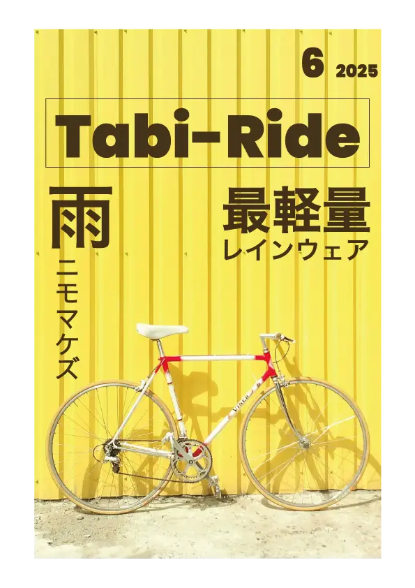
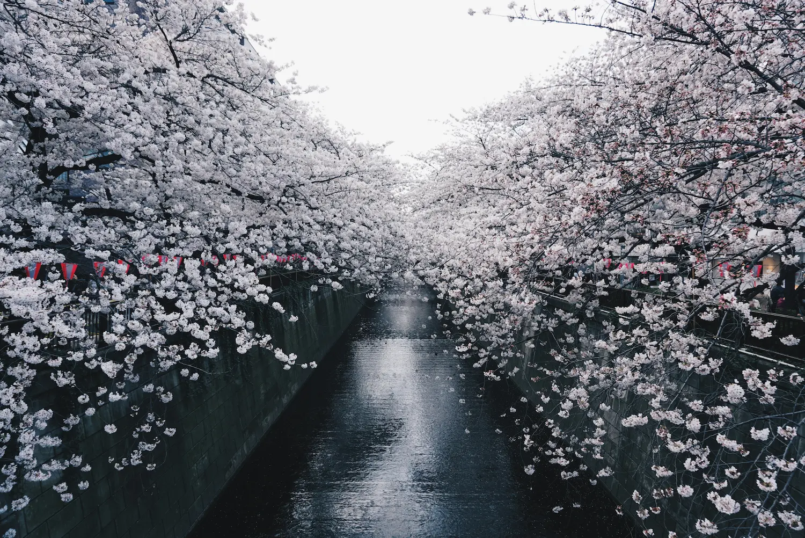
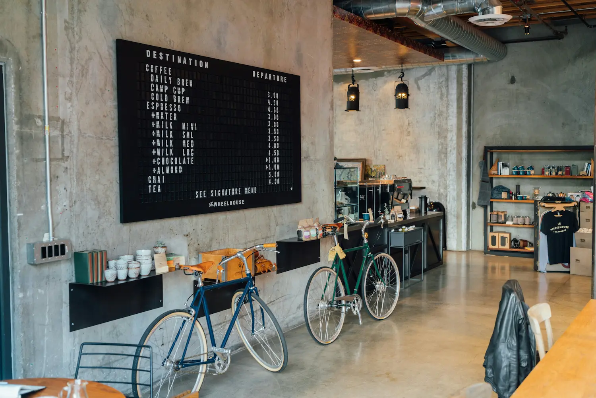
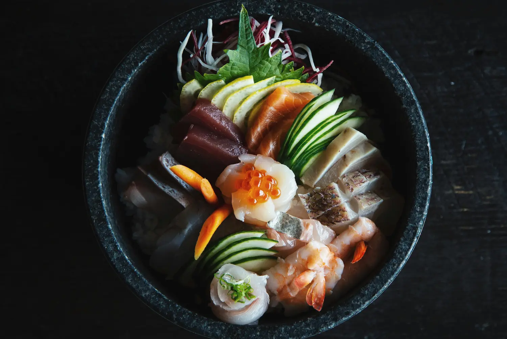
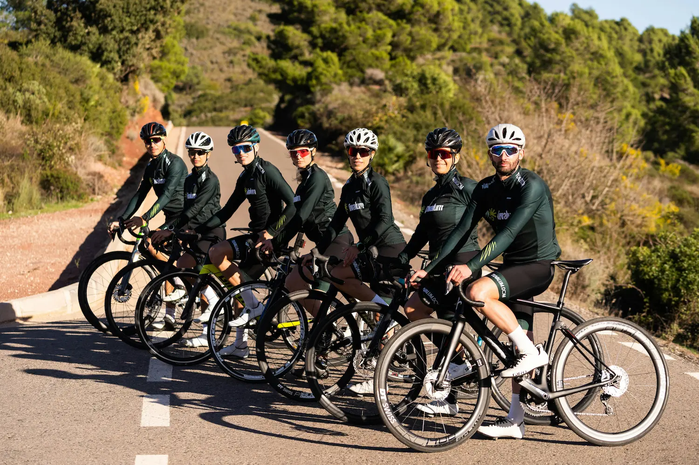
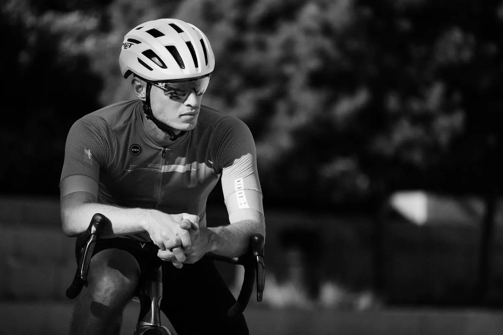
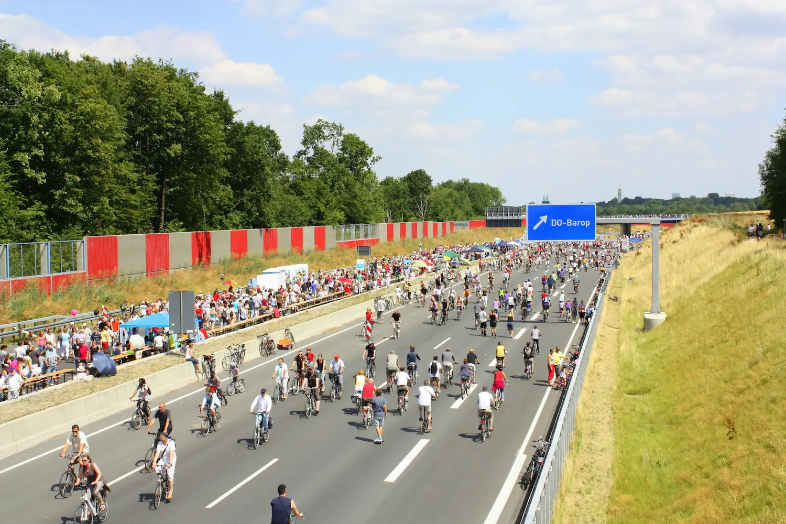

Tabi-Ride
ゆったり、自転車を楽しむ仲間と
つながる場所
自転車でのんびり旅を楽しみたい人が集う
コミュニティサイト

Tabi-Ride 6月号発売
詳細はこちらTabi-Rideとは
ゆったり、自転車を楽しむ仲間とつながる場所。
自転車でのんびり楽しみたい人が集うコミュニティサイトです。
美味しいものを求めて走ったり、季節の風景を楽しんだり、
仲間と一緒に走る楽しさを分かち合いましょう。
コミュニティの大切にしていること
思いやりを第一に
初心者からベテランまで、みんなが楽しめるように。一人ひとりのペースを尊重し、お互いを思いやる気持ちを大切にしています。
安全第一
事故やケガのないよう、交通ルールの遵守と安全運転を心がけています。自転車保険への加入を強く推奨しています。
美味しいものとの出会い
地元の名物やスイーツ、隠れた名店を発見するのも旅の楽しみ。グルメ情報の共有で、みんなの旅がもっと豊かになります。
参加方法
2. Tabi-Rideコミュニティに参加
mixi2内のTabi-Rideコミュニティページにアクセスして、参加ボタンを押してください。承認制ではないのですぐに参加できます。
コミュニティに参加する3. 自己紹介で仲間とつながろう
参加後は自己紹介トピックに投稿してみてください。お住まいの地域、サイクリング歴、好きなコースなどを教えてもらえると、近くのメンバーとつながりやすくなります。
よくある質問
Q. 初心者でも参加できますか？
A. もちろんです！初心者大歓迎です。走行会の募集時に「初心者向け」と明記されているものから参加してみてください。
Q. どんな自転車でも参加できますか？
A. ロードバイク、クロスバイク、ママチャリ、電動アシスト自転車など、どんな自転車でもOKです。
Q. 一人で参加するのが不安です
A. 多くのメンバーが一人で参加されています。主催者が丁寧にサポートしますので、安心してご参加ください。
Q. 走行会の主催はできますか？
A. 会員であれば誰でも走行会を主催できます。掲示板から募集投稿をしてください。
Q. 参加費用はかかりますか？
A. 走行会参加時の交通費や飲食費は各自負担となります。
走行会参加時のお約束
- 交通ルールの厳守
- 自転車保険への加入（推奨）
- ヘルメットの着用（推奨）
- 主催者の指示に従う
- 参加者同士の思いやり
- 無理をせず自分のペースで
メンバー体験談
Tabi-Rideで素敵な出会いと体験をした
メンバーの声
フォトギャラリー
Tabi-Rideの思い出を
ご覧ください
※コミュニティメンバーより
許可を得て掲載






2024年6月10日
チャリティサイクリングイベント
地域の清掃活動とサイクリングを組み合わせたイベント。地域貢献も大切にしています。
×

Contact
※ ポートフォリオ用デモサイト
このコンタクトフォームは表示のみで、実際の送信は行われません。